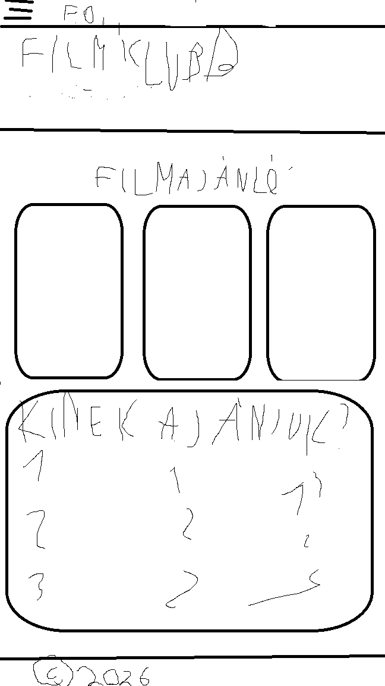

1. szakasz
1. Nap
A kezdet
Az első napon a weboldallal kapcsolatos terveinkről beszéltünk. Megbeszéltük, hogy mit szeretnénk elérni, és hogyan fogjuk megvalósítani a céljainkat. Emellett átbeszéltük a weboldal további fejlesztésével kapcsolatos elképzeléseinket is, kiosztottuk a szerepeket és megcsináltuk az alap dizájnt.

